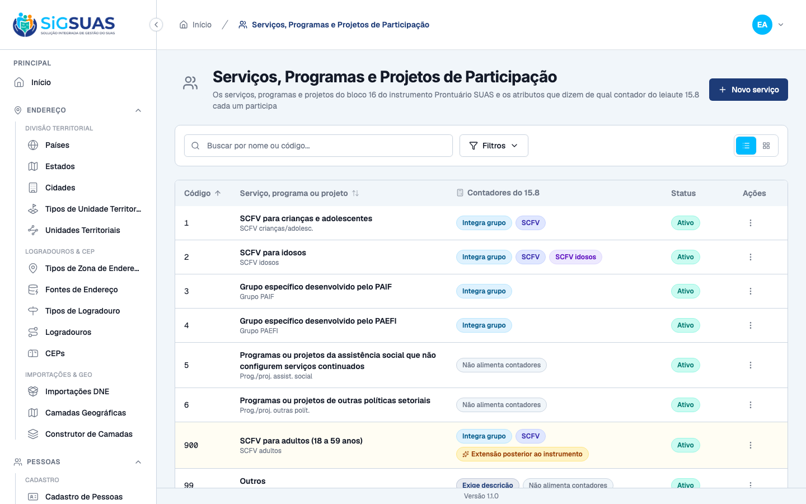

Relatório de Critérios de Aceite — US-SCFV-01
Resumo
Dez critérios de aceite, todos atendidos. Seis evidenciados no navegador (CA01, CA02, CA03, CA04, CA05 e CA06, com quatro prints) e quatro cobertos pela suíte automatizada (CA07, CA08, CA09 e CA10). A suíte do domínio de participação fecha com 177 testes e 960 asserções, e os 4 cenários Playwright passam contra base recém-semeada. A ressalva que este dossiê trazia na CA08 — o guard de uso não tinha o que contar antes da US-SCFV-02 — foi fechada com prova de ponta a ponta; ver a própria CA08 e as ressalvas.
| CA | Critério | Situação | Evidência |
|---|---|---|---|
| CA01 | Lista de serviços disponível, com os códigos do instrumento | ATENDIDO | Print + Pest |
| CA02 | Item de SCFV para adultos identificado como extensão | ATENDIDO | Print + Pest |
| CA03 | Atributo de grupo correto em cada item | ATENDIDO | Print + Pest |
| CA04 | Atributo de SCFV correto em cada item | ATENDIDO | Print + Pest |
| CA05 | Atributo de SCFV para idosos exclusivo | ATENDIDO | Print + Pest |
| CA06 | Locais de realização com os códigos do instrumento | ATENDIDO | Print + Pest |
| CA07 | Município não edita as listas | ATENDIDO (SUITE) | Pest + prova estrutural |
| CA08 | Item em uso não é excluído | ATENDIDO (SUITE) | Pest (guard real + recusa) |
| CA09 | Item inativado continua contando no histórico | ATENDIDO (SUITE) | Pest |
| CA10 | Alteração de atributo de contagem auditada | ATENDIDO (SUITE) | Pest |
CA01 — Lista de serviços disponível, com os códigos do instrumento ATENDIDO
Dado que sou Administrador no Painel Global, quando consulto o cadastro de serviços, então vejo os oito itens com os códigos 1 a 6, 99 e 900, e o salto entre o 6 e o 99 é preservado.
- Os oito itens conferidos um a um na tela, por código.
- Verificado, no sentido inverso, que os códigos 7, 8 e 10 não existem — a lista não é renumerada e o salto é parte da regra.
codeéstringe imutável após a criação, garantido também no Form Request.

CA02 — Item de SCFV para adultos identificado como extensão ATENDIDO
Dado que consulto o cadastro, quando abro o item de SCFV para adultos, então ele consta marcado como extensão posterior ao instrumento de 2013 e é distinguível dos sete de origem no MDS.
- O selo aparece no item de código
900e em nenhum dos sete que vêm do MDS — verificado nos dois sentidos. - É o único da lista inteira com o selo.
- A marcação é o que torna a reconciliação identificável se o MDS publicar versão com código próprio (risco R4 do épico).

CA03 — Atributo de grupo correto em cada item ATENDIDO
Quando abro cada item, então os três SCFV e os grupos do PAIF e do PAEFI integram a noção de grupo, e os programas não continuados, os de outras políticas e "outros" não integram.
- Matriz conferida item a item na tela, não apenas no banco.
- Os itens sem nenhum contador exibem selo próprio dizendo isso, em vez de ficarem visualmente vazios — a ausência é declarada.
CA04 — Atributo de SCFV correto em cada item ATENDIDO
Quando abro cada item, então apenas os três SCFV constam como SCFV para efeito das faixas etárias, e os grupos do PAIF e do PAEFI não constam.
- Verificado explicitamente que os códigos
3e4são grupo sem ser SCFV. - ⚠️ É essa distinção que mantém os quatro contadores de faixa etária fora dos grupos do PAIF e do PAEFI — interpretação da redação do Manual, ver ressalvas.
CA05 — Atributo de SCFV para idosos exclusivo ATENDIDO
Quando abro o item de SCFV para idosos, então ele é o único marcado como SCFV para idosos.
- Verificado que existe exatamente um item com o atributo, na lista inteira.
- É o que sustenta a natureza do contador de idosos, que é restrito pelo serviço e não pela idade.
- A invariante
elderly ⟹ scfv ⟹ groupé validada no Form Request e coberta por teste Unit.
CA06 — Locais de realização com os códigos do instrumento ATENDIDO
Quando abro a lista de locais, então vejo os cinco locais com os códigos 1 a 4 e 9.
- Os cinco conferidos por código, com a ausência dos códigos 5 a 8 verificada — o salto 4 → 9 também é do instrumento.
- O selo de cada local diz a consequência, não apenas o estado: "exige identificação do local" é o que a US-SCFV-02 vai impor.
- Apenas o código
1é a própria unidade.
CA07 — Município não edita as listas ATENDIDO (SUITE)
Dado que sou Master no Painel do Tenant, quando procuro onde alterar serviços ou locais, então a ação não existe para mim.
- Prova estrutural:
routes/api/client.phptem zero ocorrências destes recursos — a ausência é a regra. - O tenant consome as duas listas apenas por rotas de leitura compartilhadas.
Sem prova visual: critério verificado pela suíte automatizada (ver anexo).
CA08 — Item em uso não é excluído ATENDIDO (SUITE)
Dado que o item "SCFV para idosos" já foi usado em participações, quando tento excluí-lo, então a exclusão é recusada e o sistema indica que ele pode ser inativado.
- O
DELETEresponde 422 comerror_code, e as mensagens em português e em inglês citam a inativação — a recusa orienta, não apenas nega. - O guard conta uso em
family_member_participations, tabela que nasceu na US-SCFV-02. O registro de consumidores aponta para ela nas duas pontas do domínio, serviço e local. - A ressalva desta CA foi fechada. Quando este dossiê foi gerado, a tabela consumidora ainda não existia e a prova ficava vacuamente verdadeira. Com a US-SCFV-02 entregue, o critério passou a ter prova de ponta a ponta: uma participação real na base, o guard real (sem substituto de teste) e a recusa do
DELETEnos dois itens envolvidos — o serviço e o local. Verificado por mutação: esvaziar o registro de consumidores faz o teste falhar. - Nada é excluído, nem por remoção lógica: o histórico do período depende de as duas linhas continuarem existindo. O guard também conta participação cancelada e removida logicamente, porque a linha do histórico continua apontando para o item.
Sem prova visual: critério verificado pela suíte automatizada (ver anexo).
CA09 — Item inativado continua contando no histórico ATENDIDO (SUITE)
Dado que inativei um item já usado, quando consulto a apuração do período, então as participações registradas com ele continuam contando.
- Nenhuma consulta de histórico filtra
is_active— inativar não reescreve o passado. - O item inativado permanece na listagem completa e sai apenas do seletor de novos registros.
Sem prova visual: critério verificado pela suíte automatizada (ver anexo).
CA10 — Alteração de atributo de contagem auditada ATENDIDO (SUITE)
Dado que alterei o atributo de grupo de um item, quando consulto a trilha, então a alteração consta com autor e data.
- Coberto por teste, com o valor anterior registrado.
- É o evento mais sensível deste cadastro: alterar um atributo muda números já declarados ao TCE-AL, em todos os municípios.
Sem prova visual: critério verificado pela suíte automatizada (ver anexo).
Observações e ressalvas
⚠️ Uma interpretação que muda quatro contadores
Os grupos do PAIF e do PAEFI foram semeados como grupo sem ser SCFV (counts_as_group = true, counts_as_scfv = false). É interpretação da redação do Manual, não regra explícita nele: o leiaute restringe as faixas etárias a Serviços de Convivência.
Se o TCE-AL entender que grupo do PAIF também é serviço de convivência para efeito de contagem, os quatro contadores de faixa etária aumentam. A correção, se vier, é um UPDATE em duas linhas do cadastro — nenhuma migration, nenhum código. Foi para isso que a regra foi posta no dado.
O item que não vem do instrumento
O leiaute exige adultos de 18 a 59 anos em SCFV; o instrumento é de 2013 e a expansão do serviço a essa faixa veio em 2014. O item foi criado por decisão do PO e nasce marcado como extensão. É seguro porque nenhum código deste cadastro atravessa para a remessa — o 15.8 transmite apenas contagens.
Adotado o código 900, com a faixa 9xx reservada a extensões do produto: não usa 7 nem 98, que poderiam colidir se o MDS estender o domínio.
Ressalva de processo
O executor do lote de CRUD morreu por estouro de contexto (148k tokens) antes de commitar. O trabalho estava íntegro na working tree, inclusive os testes; o orquestrador inventariou, verificou com evidência de comando e commitou. Nenhum trabalho foi perdido — mas o padrão já se repetiu quatro vezes neste projeto e justifica manter o fatiamento em lotes com commit.
O que este dossiê não prova
- CA08 na tela — o critério está atendido e provado de ponta a ponta na suíte, mas segue sem captura de tela: encenar a recusa exigiria uma participação real na base de demonstração, e o gesto de tentar excluir apagaria massa usada por outros cenários. A ação de conferência que este dossiê havia registrado foi cumprida — ver a CA08.
- O consumo das listas pelo Painel do Tenant — é a US-SCFV-02.
- Os contadores do leiaute 15.8 — é a US-SCFV-03; esta HU define as regras, não faz a conta.
Anexo I — Cobertura automatizada (Pest 4, --filter=Participation)
PASS Tests\Unit\Models\SocialEntityTest
✓ it has suasParticipationType relationship 0.01s
PASS Tests\Unit\Models\SuasParticipationTypeTest
✓ it has correct fillable attributes 0.02s
✓ it defaults is_active to true
✓ it casts is_active to boolean
✓ it uses soft deletes
✓ it uses HasUuid trait
✓ it uses LogsActivity trait
✓ it defines socialEntities relationship as HasMany
✓ it configures activity log with name suas_participation_type and dirty-only logging
PASS Tests\Unit\ParticipationDomainsSeedTest
✓ it semeia exatamente os oito servicos do bloco 16, na ordem do inst… 0.40s
✓ it semeia cada servico com o nome e os atributos exatos da matriz d… 0.02s
✓ it semeia cada servico com o nome e os atributos exatos da matriz d… 0.02s
✓ it semeia cada servico com o nome e os atributos exatos da matriz d… 0.02s
✓ it semeia cada servico com o nome e os atributos exatos da matriz d… 0.02s
✓ it semeia cada servico com o nome e os atributos exatos da matriz d… 0.02s
✓ it semeia cada servico com o nome e os atributos exatos da matriz d… 0.02s
✓ it semeia cada servico com o nome e os atributos exatos da matriz d… 0.02s
✓ it semeia cada servico com o nome e os atributos exatos da matriz d… 0.02s
✓ it semeia exatamente os cinco locais de realizacao, com os codigos… 0.02s
✓ it semeia cada local com o nome e o is_own_unit exatos da matriz do… 0.02s
✓ it semeia cada local com o nome e o is_own_unit exatos da matriz do… 0.02s
✓ it semeia cada local com o nome e o is_own_unit exatos da matriz do… 0.02s
✓ it semeia cada local com o nome e o is_own_unit exatos da matriz do… 0.02s
✓ it semeia cada local com o nome e o is_own_unit exatos da matriz do… 0.02s
✓ it marca is_own_unit em exatamente um local — o codigo 1 (RN05/§4.2… 0.02s
✓ it marca counts_as_scfv_elderly em exatamente um servico — o codigo… 0.02s
✓ it respeita a invariante elderly ⟹ scfv ⟹ group em todas as linhas 0.02s
✓ it marca requires_description em exatamente um servico — o codigo 9… 0.02s
✓ it preserva o salto 6 → 99 e marca is_instrument_extension so no 90… 0.03s
✓ it preserva o salto 4 → 9 dos locais (D05/RN05) 0.02s
✓ it e idempotente: rodar duas vezes nao duplica nem renumera 0.02s
✓ it nao sobrescreve a inativacao feita pelo Administrador 0.02s
✓ it nao tem tenant_id em nenhuma das duas tabelas — sao lookups glob… 0.01s
✓ it nao aplica BelongsToTenant nos dois Models 0.01s
✓ it aplica LogsActivity nos dois Models e audita os tres atributos d… 0.01s
PASS Tests\Unit\ParticipationServiceInvariantTest
✓ it nao tem nenhuma linha violando elderly ⟹ scfv ⟹ group 0.02s
✓ it mantem a invariante item a item nos oito servicos 0.02s
✓ it reserva o contador de idosos a exatamente um servico 0.02s
✓ it declara family_member_participations como consumidora dos dois d… 0.02s
✓ it nao trava a exclusao enquanto a tabela de participacoes nao exis… 0.02s
✓ it conta o uso pela coluna declarada assim que a tabela consumidora… 0.03s
PASS Tests\Unit\Services\Siap\SiapDomainMapTest
✓ it collapses the four SUAS participation types into the three of SIAP
PASS Tests\Feature\Api\Relationals\SuasParticipationTypeControllerTest
✓ it lists only active suas participation types 0.04s
✓ it returns up to 30 participation types and flags searchable above… 0.03s
✓ it exposes only id, name and code 0.04s
✓ it filters by search on name (case-insensitive) 0.01s
✓ it filters by search on code 0.01s
✓ it rejects unauthenticated request with 401 0.02s
✓ it rejects search shorter than 2 characters 0.01s
✓ it accepts requests from the client guard 0.02s
✓ it caches the active participation type set 0.01s
✓ it invalidates the cache when a participation type is created 0.01s
✓ it invalidates the cache on bulk deactivate 0.03s
✓ it drops a participation type from the cached set when it becomes i… 0.01s
PASS Tests\Feature\Api\SocialEntityControllerTest
✓ it CA02: store requires all mandatory SIAP layout fields with ('sua… 0.05s
PASS Tests\Feature\Api\SuasParticipationTypeControllerTest
✓ it lists suas participation types 0.02s
✓ it creates a suas participation type 0.02s
✓ it shows a suas participation type 0.02s
✓ it updates a suas participation type 0.02s
✓ it deletes a suas participation type 0.02s
✓ it validates required fields on create 0.02s
✓ it requires authentication 0.01s
✓ it filters suas participation types by name 0.02s
✓ it sorts suas participation types by code 0.02s
✓ it blocks deletion when participation type is linked to a social en… 0.02s
✓ it allows deletion after social entity link is removed 0.02s
✓ it exposes is_active and defaults to true on create 0.02s
✓ it filters suas participation types by is_active 0.05s
✓ it bulk activates suas participation types 0.02s
✓ it bulk deactivates suas participation types 0.02s
✓ it forbids bulk activate without the bulk-update permission 0.02s
✓ it validates uuids on bulk activate 0.02s
✓ it rejects integer ids on bulk activate 0.02s
PASS Tests\Feature\Manager\ParticipationDomainsTest
✓ it lista os oito servicos com os codigos do instrumento e preserva… 0.03s
✓ it nunca expoe o id no payload dos dominios de participacao 0.03s
✓ it identifica o SCFV para adultos como extensao do produto, e so el… 0.02s
✓ it expoe os atributos de contagem de cada servico conforme a matriz… 0.03s
✓ it marca o contador de idosos em exatamente um servico — o codigo 2 0.02s
✓ it recusa marcar um segundo servico com o contador de idosos 0.02s
✓ it recusa a combinacao que viola elderly ⟹ scfv ⟹ group na criacao 0.03s
✓ it recusa desligar o grupo de um servico que continua contando como… 0.02s
✓ it cria um servico proprio do Administrador respeitando a invariant… 0.03s
✓ it aceita servico sem apelido e recusa apelido acima de 30 caracter… 0.02s
✓ it recusa renumerar o codigo de um servico, mas aceita o reenvio do… 0.02s
✓ it recusa renumerar o codigo de um local de realizacao 0.03s
✓ it lista os cinco locais com os codigos do instrumento e so o 1 com… 0.02s
✓ it nao registra nenhuma rota de escrita dos dominios de participaca… 0.02s
✓ it nao oferece escrita ao guard client, mas mantem a leitura das du… 0.04s
✓ it colhe exatamente as cinco abilities de cada dominio de participa… 0.05s
✓ it recusa excluir um servico ja usado em participacoes, orientando… 0.03s
✓ it recusa excluir um local ja usado em participacoes, orientando a… 0.03s
✓ it exclui um item sem uso, porque a lista e aberta e o engano preci… 0.03s
✓ it mantem o item inativado na lista e no historico, tirando-o so do… 0.03s
✓ it mantem o local inativado na lista completa e fora do select de a… 0.03s
✓ it audita a alteracao de um atributo de contagem com autor, data e… 0.02s
✓ it audita a alteracao do local de realizacao com o valor anterior d… 0.03s
✓ it deixa o Operacional Global consultar, mas nao manter, os dominio… 0.03s
Tests: 97 passed (471 assertions)
Duration: 2.79sAnexo II — Cenários Playwright (project chromium, Painel Global)
[globalSetup] Rate-limiter cache do Laravel zerado. Running 6 tests using 2 workers ✓ 1 [setup] › tests/auth.setup.ts:10:6 › autentica super admin (UI) e propaga cookies para o api-client (1.3s) [tenant-auth.setup] sessão de tenant pronta em /Users/binho/Projetos/esuas-all/e2e/.auth/tenant.json ✓ 2 [setup] › tests/tenant-auth.setup.ts:82:6 › autentica usuário do tenant (client) e propaga cookies para o api-client (1.6s) ✓ 3 [chromium] › tests/lookups/participation-domains.spec.ts:64:7 › US-SCFV-01 — domínios de participação no Painel Global (admin) › (a) os oito serviços aparecem com os códigos do instrumento, e o salto 6 → 99 é preservado (6.7s) ✓ 4 [chromium] › tests/lookups/participation-domains.spec.ts:91:7 › US-SCFV-01 — domínios de participação no Painel Global (admin) › (b) o SCFV para adultos é distinguível como extensão posterior ao instrumento (6.7s) ✓ 5 [chromium] › tests/lookups/participation-domains.spec.ts:118:7 › US-SCFV-01 — domínios de participação no Painel Global (admin) › (c) a matriz dos três atributos de contagem confere item a item na tela (6.6s) ✓ 6 [chromium] › tests/lookups/participation-domains.spec.ts:160:7 › US-SCFV-01 — domínios de participação no Painel Global (admin) › (d) os cinco locais de realização, e só o primeiro é a própria unidade (6.8s) 6 passed (29.6s)